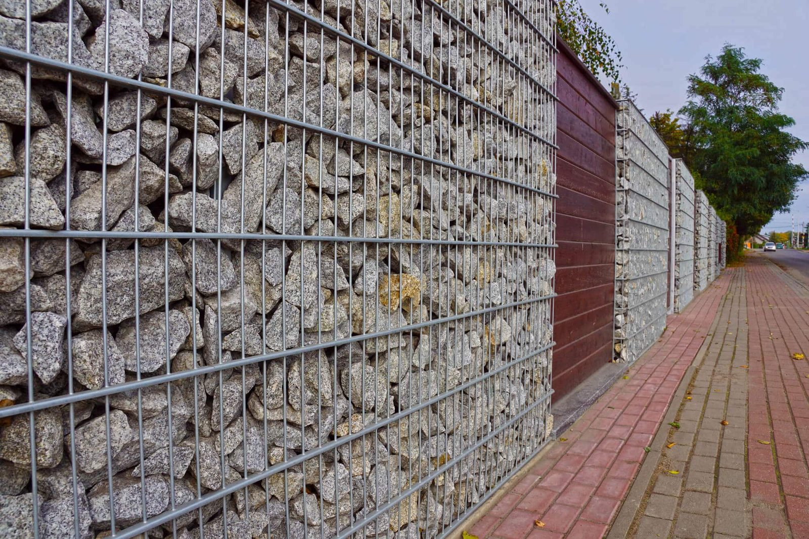

In This Guide
- Metal fence styles fall into four broad looks: classic spear-top pickets, ornamental scrollwork, modern horizontal slats, and welded wire panels.
- Picket styles suit traditional and historic homes, while slat styles suit modern houses and give more screening than open pickets.
- Gates, posts, finials, and color should match the style, since they change the look of a fence as much as the panels do.
- Match the style to the house, the reason for the fence, and any HOA or neighborhood rules before you settle on a design.
Metal fences come in more looks than most homeowners expect. Some are ornamental and traditional, some are clean and modern, and some exist mainly to do a job. This guide walks through the styles people ask about most, so you can picture each one before you sit down with a fence company.
Big Easy Fence installs all of these styles as part of its metal fence work. In a city known for its ironwork and mixed architecture, the style you pick matters as much as the material underneath it.
Four Looks at a Glance
Nearly every metal fence you see fits one of these four families. Later sections cover each in more detail.
Spear-Top Pickets
Tall vertical bars with pointed tops. A traditional look that suits older homes and formal front yards.
Scrollwork and Finials
Curls, rings, and decorative caps that turn a boundary line into a feature of the property.
Horizontal Slats
Flat bars or boards laid sideways, with tight or wide gaps. Clean lines and more screening than open pickets.
Welded Wire Panels
Rigid grids of wire, plain or filled with stone. Straightforward, sturdy, and easy to live with.
Picket Styles
Vertical pickets are the most familiar metal fence. The differences come down to how the tops are finished and how much decoration is added between the bars.
Flat-Top Pickets
Flat-top panels keep the lines simple. The bars stop at a straight top rail, which gives a tidy, understated look that works with almost any house.
Spear-Top Pickets
Pointed tops extend above the top rail and add a traditional character. They also make the fence harder to climb, which is one reason they show up around pools and commercial lots as well as homes.
Ornamental Scrollwork
Scrolls, circles, and finials are added between or above the pickets. This is the look most people picture when they think of wrought iron fencing, and the same designs can be built in steel or aluminum.
Arched and Bow-Top Sections
Some designs curve the top rail up or down to follow the ground or to frame an entry. Arched gates paired with straight fence runs are a common way to give a front walk some emphasis.
Horizontal Slat and Louver Styles
Slat fences turn the bars sideways. Set close together, they screen a yard from the street. Spaced wider, they let light and air through while still breaking up the view. These styles are usually built in aluminum or steel with a factory-applied color.
They suit modern and contemporary houses best, though a dark slat fence can also look sharp against brick. Because slats catch more wind than open pickets, ask how the posts are set and braced for a fence with a lot of solid surface.
Welded Wire and Mesh Panels
Welded wire panels are rigid grids of steel wire, usually galvanized or coated. They are the plainest metal fence style, and they can look better than you might expect when paired with good posts and clean lines.

Filling wire panels with stone gives a solid, textured wall, as in the photo above. It takes more posts and footing work than a standard panel, so it is a design choice rather than a budget one. Traditional chain link belongs to the same wire family and is the go-to option when function comes first.
Gates, Posts, and Finishes That Complete the Look
Panels get the attention, but the details around them decide whether a fence looks planned or improvised.
- Gates. A gate should share the style of the fence, whether that is matching pickets, an arch, or the same slat spacing.
- Posts and columns. Plain metal posts read as modern. Brick or stone columns between panels add weight and tie the fence to the house.
- Finials and caps. Small decorative tops are an inexpensive way to change the character of a picket fence.
- Color. Black is the classic choice, and bronze and white are also common. A darker color tends to hide dirt and blend into landscaping.
To see how these pieces come together on real properties, browse the project gallery.
Choosing a Style for Your Home
Three questions narrow the list quickly.
What Does the House Look Like?
Traditional and historic homes usually pair well with pickets, scrollwork, and gates with some detail. Modern homes tend to suit slats or plain flat-top panels. A fence that echoes lines already on the house looks intentional.
What Is the Fence For?
Keeping pets and children in, marking a pool area, adding privacy, and improving security each point to a different style. Open pickets show off a yard, slats screen it, and spear tops discourage climbing.
What Rules Apply?
Height limits, materials, and style requirements can come from your city or parish, your HOA, or a historic district. Check with your city or parish and your HOA before you commit to a design, and ask a contractor which approvals your project needs.
Talking Styles With a Contractor
Bring photos of fences you like, a rough sense of how much privacy you want, and any HOA guidelines. Each style can be built in more than one metal, so also ask about the finish and how it holds up. The question of rust is covered in our guide on whether metal fences rust, and a breakdown of each metal is in the guide to types of metal fencing.
Want to See Styles Before You Choose?
Send us photos of your house and yard and we will talk through which metal styles fit the property.